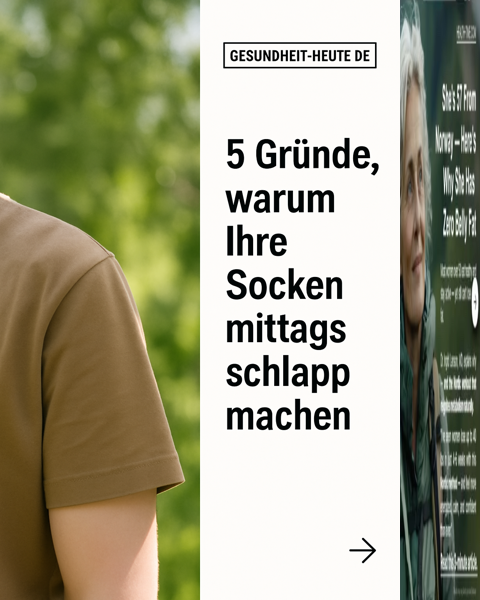
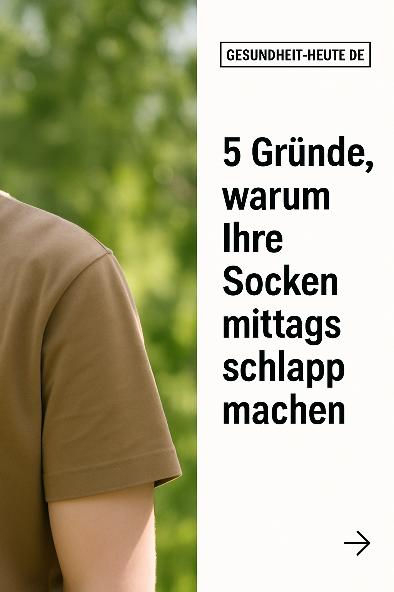
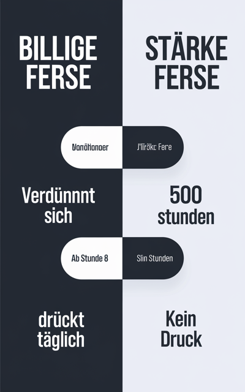
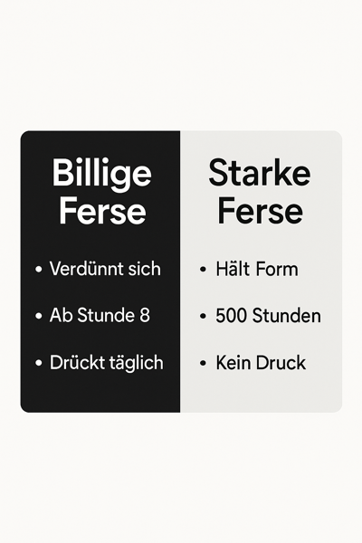

Diagnosis of the image-generation run you sent over. Short version: your prompts and models are fine. Two separate things were making the output look broken, and only one is a real fix.
The headline: this is mostly a preview problem, not a generation problem.
The "sliver of a different image on the right edge" that stood out is not baked into your ads. It's the review page placing a small reference thumbnail next to each ad. Your actual generated files are clean, single images.
Your ad-review.html shows each concept as a two-part row:
[ your generated ad | 80px swipe reference ]
That 80px strip on the right is the swipe image the concept was modeled on — added so you can compare generation vs. reference at a glance. Because it sits flush against the ad with no gap, it reads like a foreign sliver got baked into the ad.
It did not. Open any generated .png on its own and the sliver is gone — the file is a clean 1024×1536 single image. The strip only exists inside the review layout.


Fix: remove (or visibly separate) the reference column in the review view. Nothing to change in your prompts or generation.
A separate issue: some images had scrambled German text ("Vanõtionoer", "Slin Stunden", etc.). This is the classic weak-model text-rendering failure.
The bundle shows the run cycled through several models — flux/dev, flux/schnell, recraft-v3, ideogram/v2 — none of which render legible text, especially German with umlauts. Those produced the garbled 800×1280 versions.
The later gpt-image-1 (GPT Image 2) versions at 1024×1536 render the same headlines cleanly. So the fix is already in your own bundle — you just have old weak-model versions still sitting alongside the good ones.


Fix: standardize on GPT Image 2 or Nano Banana 2, delete the old flux/recraft variants, and you're done.
A few concepts ask the model for a "left half / right half / navigation arrow at the right edge" editorial split (e.g. the GESUNDHEIT-HEUTE and AdMedika layouts). The model draws that divider literally, which can look like a seam.
Not broken, but if you want cleaner single-focus ads, drop the explicit "right half / right edge" language from those specific prompts. Optional.
Bottom line: nothing structurally wrong with your setup. One display quirk in the review page, one weak-model leftover. Both easy.